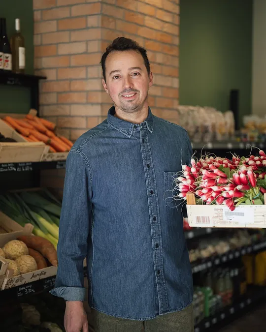

20 rue Ballainvilliers · Clermont-Ferrand
Café Laitue votre primeur gourmet à Clermont-Ferrand
Fruits & légumes frais de saison, jus pressés minute, café de spécialité, épicerie fine et dépôt de pain.
Les étals
Fruits & légumes de saison
Choisis chaque jour, origine France privilégiée : les étals suivent les saisons.
-
Jus pressés minute
Choisissez vos fruits, on presse devant vous.
-
Épicerie fine
Douceurs, conserves, vins : une sélection gourmande pour compléter le panier.
-
Dépôt de pain
Les pains d’Atelier Bon, pain vivant, proposés chaque jour.
Calendrier complet des fruits et légumes de saison
| Mois | Fruits | Légumes |
|---|---|---|
| Janvier | clémentine, kiwi, orange, poire, pomme | betterave, butternut & potimarron, carotte, céleri-rave, chou, chou-fleur, endive, mâche, navet, panais, poireau |
| Février | clémentine, kiwi, orange, poire, pomme | betterave, butternut & potimarron, carotte, céleri-rave, chou, chou-fleur, endive, mâche, navet, panais, poireau |
| Mars | kiwi, orange, poire, pomme | betterave, carotte, céleri-rave, chou, chou-fleur, endive, épinard, mâche, navet, panais, poireau, radis |
| Avril | fraise, kiwi, orange, pomme, rhubarbe | asperge, carotte, chou-fleur, endive, épinard, laitue, poireau, radis |
| Mai | cerise, fraise, rhubarbe | artichaut, asperge, carotte, concombre, épinard, laitue, petits pois, radis |
| Juin | abricot, cerise, fraise, framboise, melon, pêche & nectarine, rhubarbe | artichaut, asperge, aubergine, brocoli, carotte, concombre, courgette, fenouil, haricot vert, laitue, petits pois, radis, tomate |
| Juillet | abricot, cerise, fraise, framboise, melon, myrtille, pastèque, pêche & nectarine, prune & mirabelle | artichaut, aubergine, betterave, brocoli, carotte, concombre, courgette, fenouil, haricot vert, laitue, petits pois, poivron, radis, tomate |
| Août | abricot, figue, framboise, melon, myrtille, pastèque, pêche & nectarine, poire, pomme, prune & mirabelle, raisin | artichaut, aubergine, betterave, brocoli, carotte, concombre, courgette, fenouil, haricot vert, laitue, poivron, radis, tomate |
| Septembre | figue, framboise, melon, myrtille, pastèque, pêche & nectarine, poire, pomme, prune & mirabelle, raisin | artichaut, aubergine, betterave, brocoli, butternut & potimarron, carotte, céleri-rave, chou-fleur, concombre, courgette, épinard, fenouil, haricot vert, laitue, patate douce, poireau, poivron, radis, tomate |
| Octobre | châtaigne, coing, figue, poire, pomme, raisin | betterave, brocoli, butternut & potimarron, carotte, céleri-rave, chou, chou-fleur, endive, épinard, fenouil, laitue, mâche, navet, panais, patate douce, poireau, poivron, radis, tomate |
| Novembre | châtaigne, clémentine, coing, kiwi, poire, pomme | betterave, brocoli, butternut & potimarron, carotte, céleri-rave, chou, chou-fleur, endive, épinard, fenouil, mâche, navet, panais, patate douce, poireau |
| Décembre | châtaigne, clémentine, coing, kiwi, orange, poire, pomme | betterave, butternut & potimarron, carotte, céleri-rave, chou, chou-fleur, endive, mâche, navet, panais, patate douce, poireau |

Votre primeur
Derrière le comptoir
Au Café Laitue, c’est le primeur lui-même qui choisit les fruits et légumes, prépare votre café et presse vos jus à la minute. Un conseil, une recette, un fruit à goûter : ici, on prend le temps.
- Fruits & légumes de saison
- Origine France privilégiée
- Café torréfié à Clermont
- Pain vivant Atelier Bon
Carte fidélité
Dix tampons, une boisson offerte
Carte fidélité
0/10
Encore 10 boissons avant la prochaine offerte.
- Commandez un café ou un jus.
- Montrez cette carte : le primeur la tamponne avec son code.
- Au 10e tampon, votre boisson est offerte.
Gratuit, sans inscription. Vos tampons restent sur ce téléphone.